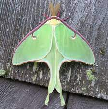
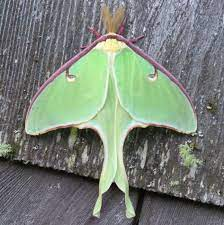

Green
Interesting facts about the color Green
- Green is the second most popular favorite color, after blue.
- We see more Greens than any other color
- Green has long been a symbol of fertility and was once the preferred color choice for wedding gowns in the 1400’s.
- Suicides dropped by 34% when London’s Blackfriar Bridge was painted green.
More fun facts about green this way!
 
